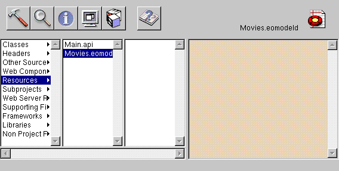

Table of Contents
Table of Contents  Next Section
Table of Contents
Next Section
Table of Contents  Previous Section
Previous Section
Like GuestBook, the Movies project contains a Main component (Main.wo). It also includes some files that the GuestBook doesn't have: classes (Application.java, Session.java, DirectAction.java, and Main.java), a model file, and images used by the Main component.
In Project Builder, navigate to the Movie project's Resources category. This is where the model, named Movies.eomodeld, is located. Later in this tutorial you'll use EOModeler to open the model and enhance it.

Navigate to the Web Server Resources category. This is where your project's images are located: DBWizardUpdate.gif, DBWizardDelete.gif, and DBWizardInsert.gif, for the "Save to database," "Delete", and "Insert/New" buttons, respectively.
The biggest difference between the GuestBook and Movies projects are their Main components. Whereas the Main component you created for the GuestBook project was empty, the Main component for the Movies project contains a fully functional user interface. Also, the Main.java class already contains code that supplies the component with behavior. In the next sections, you'll examine Movies' Main.wo component and its Main.java class.
Table of Contents Next Section